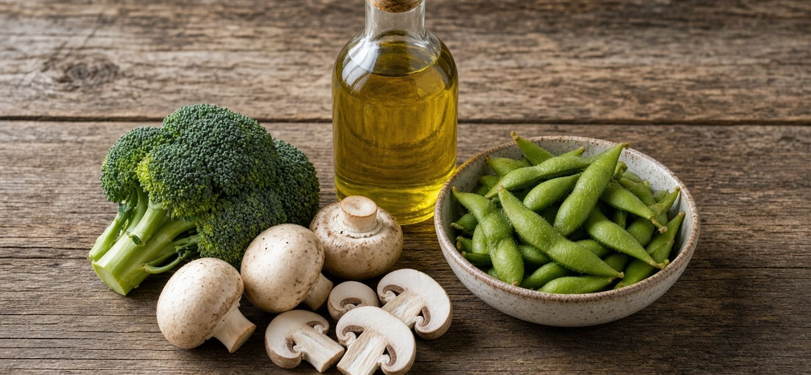
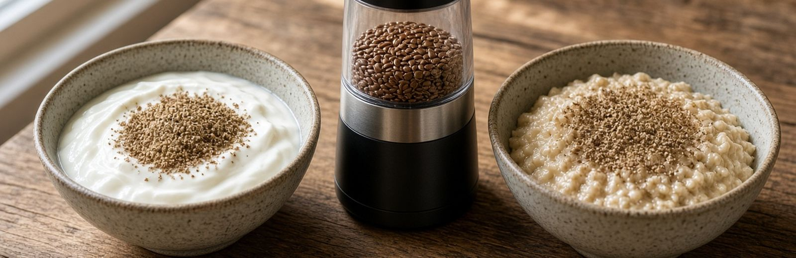
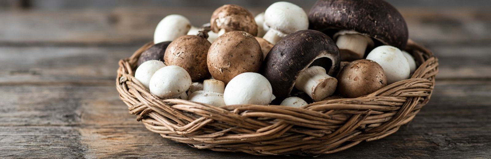

Breast Cancer Beyond Genetics · Part Six
Foods With Evidence Behind Them
A handful of foods show up repeatedly in the research, with numbers attached. These are ordinary groceries with unusually good data.
One theme runs through all of them, and it is worth knowing before the details: the whole food and its extracted compound do not behave the same way. Where research exists on both, the whole food consistently does better — and in one case the isolated supplement does measurable harm.

Cruciferous Vegetables
Shanghai Breast Cancer Survival StudyBroccoli, cauliflower, cabbage, kale, Brussels sprouts, bok choy, arugula, radishes.
In the Shanghai Breast Cancer Survival Study, women who ate the most cruciferous vegetables in the three years after diagnosis had, compared with those who ate the least:
Why. These vegetables contain glucoraphanin, which converts to sulforaphane when the plant is chewed or chopped. Sulforaphane switches on your body’s Phase 2 detoxification enzymes — the ones that tag dangerous compounds for removal. Which means it directly supports the methylation step from Part Two that neutralizes the damaging estrogen metabolites.
The related compounds DIM and I3C, also formed from cruciferous vegetables, shift estrogen metabolism toward the safe 2-OH exit and away from the damaging 4-OH one.
This is the clearest example in the book of a food acting directly on a mechanism.
Broccoli sprouts are the concentrated version
Three-day broccoli sprouts carry roughly 20 to 50 times the glucoraphanin of mature broccoli. A small handful does what a large serving of full-grown broccoli does. This was the Johns Hopkins discovery that opened the entire sulforaphane field.
- Cruciferous vegetables most days. Chop and let sit ten minutes before cooking.
- Broccoli or radish sprouts — a small handful, raw, on salads or eggs.
Soy — Whole, Never Processed
Pooled US and Chinese cohortsWomen have been told for two decades to avoid soy because it acts like estrogen. The research reversed, and the reversal is worth understanding, because the original warning was half right.
Pooling data across US and Chinese cohorts, higher soy intake after diagnosis was associated with 30% lower overall mortality and 23% lower recurrence. In the US cohorts, eating 10mg or more of isoflavones daily versus under 4mg gave a 24% lower recurrence risk. The benefit was clearest in postmenopausal women, and it did not interfere with tamoxifen — the specific fear that drove the original warning.
What was studied: tofu, soy milk, and fresh soybeans. Whole foods. Roughly 11g of soy protein daily was where the benefit topped out; more added nothing.
Now the other half
When researchers gave premenopausal women soy protein isolate — the extracted powder used in supplements, protein bars, and meat substitutes — breast fluid showed increased hyperplastic cells, meaning more proliferation in breast tissue. In animal studies, isolated genistein stimulated estrogen-dependent tumor growth in a dose-dependent way and interfered with both tamoxifen and aromatase inhibitors.
Then the finding that explains everything: whole soy flour contained compounds that largely cancelled out genistein’s tumor-promoting effect. Something in the intact bean restrains what the extract does alone.
Go deeper: why it may not work the same for everyone
Some of soy’s benefit depends on gut bacteria converting an isoflavone called daidzein into a more active compound called equol. Only about 25 to 35% of American women carry the bacteria to do this, versus 40 to 60% of women in high-soy Asian populations. Vegetarians run around 60%.
This is the estrobolome from Part Three again. Whether soy helps you may depend on what you have been eating for years.
If you take tamoxifen or an aromatase inhibitor, avoid isoflavone supplements specifically. Whole soy foods have not shown the same interference.
Ground Flaxseed
Observational + randomized, placebo-controlled trial
Flax is the richest food source of lignans, plant compounds your gut bacteria convert into enterolactone. Enterolactone is structurally similar to estrogen and competes with it at the receptor — occupying the docking site without delivering the full signal.
In postmenopausal women with breast cancer, higher lignan intake or higher enterolactone levels were associated with 27% lower all-cause mortality. In a randomized, placebo-controlled trial, women given flaxseed before surgery showed reduced tumor cell proliferation in the tissue removed weeks later.
Two practical points that decide whether it works
Note the pattern: like soy, and like equol, enterolactone is produced by your gut bacteria. Three of the foods in this chapter only work if your microbiome can activate them.
Two tablespoons of freshly ground flaxseed daily — about 30 grams — in yogurt, oatmeal, or a smoothie. Kept cold.
Green Tea
Meta-analysis · 163,810 peopleA meta-analysis pooling 163,810 people found green tea consumption associated with 15% lower breast cancer risk. For women who already had stage I or II disease, regular green tea intake was associated with 44% lower recurrence.
The active compound is EGCG, a catechin that appears to interfere with tumor blood vessel formation and cancer cell signaling. Matcha, being the whole ground leaf rather than an infusion, delivers more per cup.
Two to three cups daily. Green rather than black — the fermentation that makes black tea reduces the catechin content.
Mushrooms
Two entirely separate bodies of research, and both are worth knowing.
The supermarket mushroom, for estrogen
Pooling observational studies, women with the highest mushroom consumption had 35% lower breast cancer risk than those with the lowest.
The mechanism is specific to breast tissue. Researchers tested seven vegetable extracts against aromatase — the enzyme that converts other hormones into estrogen in fat tissue — and the white button mushroom was by far the most effective inhibitor. Celery had a mild effect. Broccoli, spinach, carrot, and bell pepper did nothing.
Across eleven mushroom varieties, the strongest inhibitors were white button, cremini, portobello, baby button, and shiitake. The joke is that the first four are all the same mushroom at different ages — white button matures into cremini, then portobello. The cheapest mushroom in the store is the one with the breast-specific mechanism.

Medicinal mushrooms, for immunity
A different tradition, using concentrated extracts alongside treatment rather than food.
Turkey tail has the most human data. In a trial in women recovering from breast cancer radiotherapy, doses up to 9 grams daily were safe and produced increased lymphocyte counts and increased natural killer cell activity — the same cells doing immune surveillance in Part Two, and the same ones chronic cortisol suppresses in Part Three. Its extract PSK is prescribed routinely to cancer patients in Japan during and after treatment. A review of 23 trials covering more than 4,200 patients found turkey tail combined with reishi associated with improved survival and quality of life in several cancers.
The strongest survival evidence is in gastric and colorectal cancer rather than breast, and not every study is positive.
- Ordinary white, cremini, or portobello mushrooms several times a week. Cook them; do not eat them raw.
- If considering a medicinal mushroom extract during treatment, choose fruiting-body extracts rather than mycelium grown on grain, and bring it to your oncology team.
Extra-Virgin Olive Oil
Randomized trial · 4,282 womenThis is the only randomized trial ever to show a dietary pattern reducing breast cancer incidence.
In the Spanish PREDIMED trial, 4,282 women were assigned to a Mediterranean diet with extra-virgin olive oil, the same diet with nuts, or a low-fat control diet. The olive oil group had 62% lower invasive breast cancer risk. Each additional 5% of daily calories from extra-virgin olive oil lowered risk by a further 28%.
The trial was designed to study heart disease, and breast cancer was a secondary outcome with relatively few cases — so the number is striking rather than settled. But it is a randomized trial, which almost nothing else in nutrition can claim.
Extra-virgin matters. The polyphenols responsible are stripped out of refined, “light,” and “pure” olive oil. Buy dark bottles, use it as your primary fat, and do not treat the refined version as the same product.
Putting The Numbers Together
Every one of these is a grocery item. Together they cost less than a month of most supplement regimens, and unlike supplements, the whole-food versions are what the research actually measured.